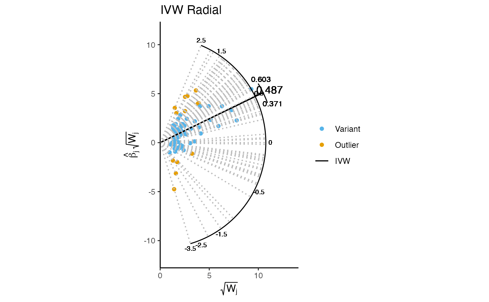
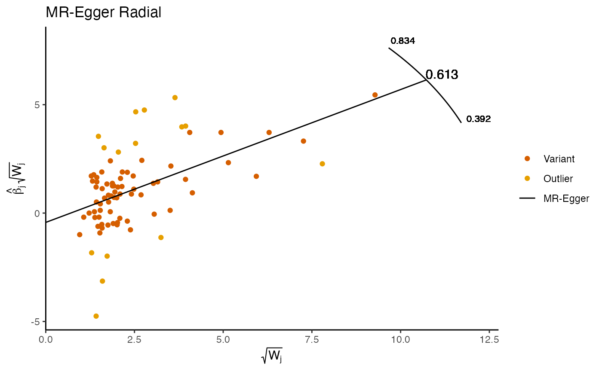

A function for producing radial IVW and MR-Egger plots either individually or simultaneously. The function allows for a variety of aesthetic and scaling options, utilising the output from the IVW_radial and egger_radial functions.
Arguments
- r_object
An object of class
"IVW"or"egger". For visualising both estimates simultaneously, both objects should be included as a vector c(A,B), whereAandBdenote the"IVW"and"egger"objects respectively.- radial_scale
Indicates whether to produce a plot including a full radial scale (
TRUE), or a scatterplot showing only the effect estimates (FALSE).- show_outliers
Indicates whether display only the set of variants identified as outliers (
TRUE) or the complete set of variants (FALSE). Note that when (show_outliers=TRUE), non-outlying variants further from the origin than the furthest outlier will cause an error message that one or more points have been omitted. These are non-outlying variants beyond the scale. If no outliers are present, a plot will be produced using the full set of variants, with an accompanying message indicating the absence of outliers.- scale_match
Indicates whether x and y axes should have the same range(
TRUE), or different ranges (FALSE) This improves the interpretation of the radial scale, and is set toFALSEwhen the radial scale is omitted from the plot.
Value
A ggplot object containing a radial plot of either the IVW, MR-Egger, or both estimates simultaneously.
References
Bowden, J., et al., Improving the visualization, interpretation and analysis of two-sample summary data Mendelian randomization via the Radial plot and Radial regression. International Journal of Epidemiology, 2018. 47(4): p. 1264-1278.
Examples
ldl.dat <- data_radial[data_radial[,10]<5e-8,]
ldl.fdat <- format_radial(ldl.dat[,6], ldl.dat[,9],
ldl.dat[,15], ldl.dat[,21], ldl.dat[,1])
ivw.object <- ivw_radial(ldl.fdat, 0.05, 1, 0.0001, TRUE)
#>
#> Radial IVW
#>
#> Estimate Std.Error t value Pr(>|t|)
#> Effect (1st) 0.4874900 0.05830409 8.361163 6.210273e-17
#> Iterative 0.4873205 0.05827885 8.361874 6.172955e-17
#> Exact (FE) 0.4958973 0.03804168 13.035630 7.673061e-39
#> Exact (RE) 0.4910400 0.05387806 9.113916 4.729550e-14
#>
#>
#> Residual standard error: 1.544 on 81 degrees of freedom
#>
#> F-statistic: 69.91 on 1 and 81 DF, p-value: 1.46e-12
#> Q-Statistic for heterogeneity: 193.0843 on 81 DF , p-value: 3.827332e-11
#>
#> Outliers detected
#> Number of iterations = 3
plot_radial(ivw.object)

egg.object <- egger_radial(ldl.fdat, 0.05, 1, TRUE)
#>
#> Radial MR-Egger
#>
#> Estimate Std. Error t value Pr(>|t|)
#> (Intercept) -0.4303552 0.3244151 -1.326557 1.884296e-01
#> Wj 0.6129126 0.1109369 5.524877 3.988423e-07
#>
#> Residual standard error: 1.537 on 80 degrees of freedom
#>
#> F-statistic: 30.52 on 1 and 80 DF, p-value: 3.99e-07
#> Q-Statistic for heterogeneity: 188.9285 on 80 DF , p-value: 8.445607e-11
#>
#> Outliers detected
#>
plot_radial(egg.object)
